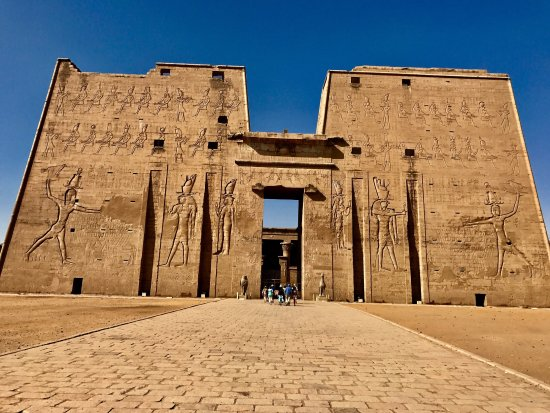

معابد المصرية
تُعد المعابد المصرية من أهم معالم الحضارة الفرعونية، وكانت مراكز دينية وسياسية هامة. بُنيت لتمجيد الآلهة والملوك، وتميزت بالتصميم الضخم والنقوش الرائعة. ومن أشهرها معابد الكرنك والأقصر وأبو سمبل، التي لا تزال تبهر العالم بجمالها وعظمتها
اضغط هنا
المتحف المصرى
يُعد المتحف المصري في القاهرة من أهم المتاحف في العالم، حيث يضم أكبر مجموعة من الآثار الفرعونية. يحتوي المتحف على آلاف القطع الأثرية، منها تماثيل ومومياوات وتوابيت، أبرزها كنوز الملك توت عنخ آمون. وهو شاهد حي على عظمة الحضارة المصرية القديمة. اضغط هنا

الأهرامات
تُعد أهرامات الجيزة من أعظم المعالم الأثرية في العالم، وهي تضم ثلاثة أهرامات رئيسية: هرم خوفو، وهرم خفرع، وهرم منقرع. بُنيت هذه الأهرامات قبل أكثر من أربعة آلاف عام كمقابر لملوك الفراعنة، وتُظهر براعة المصريين القدماء في الهندسة والعمارة. وتُعد رمزًا لقوة الحضارة المصرية وعظمتها. اضغط هنا